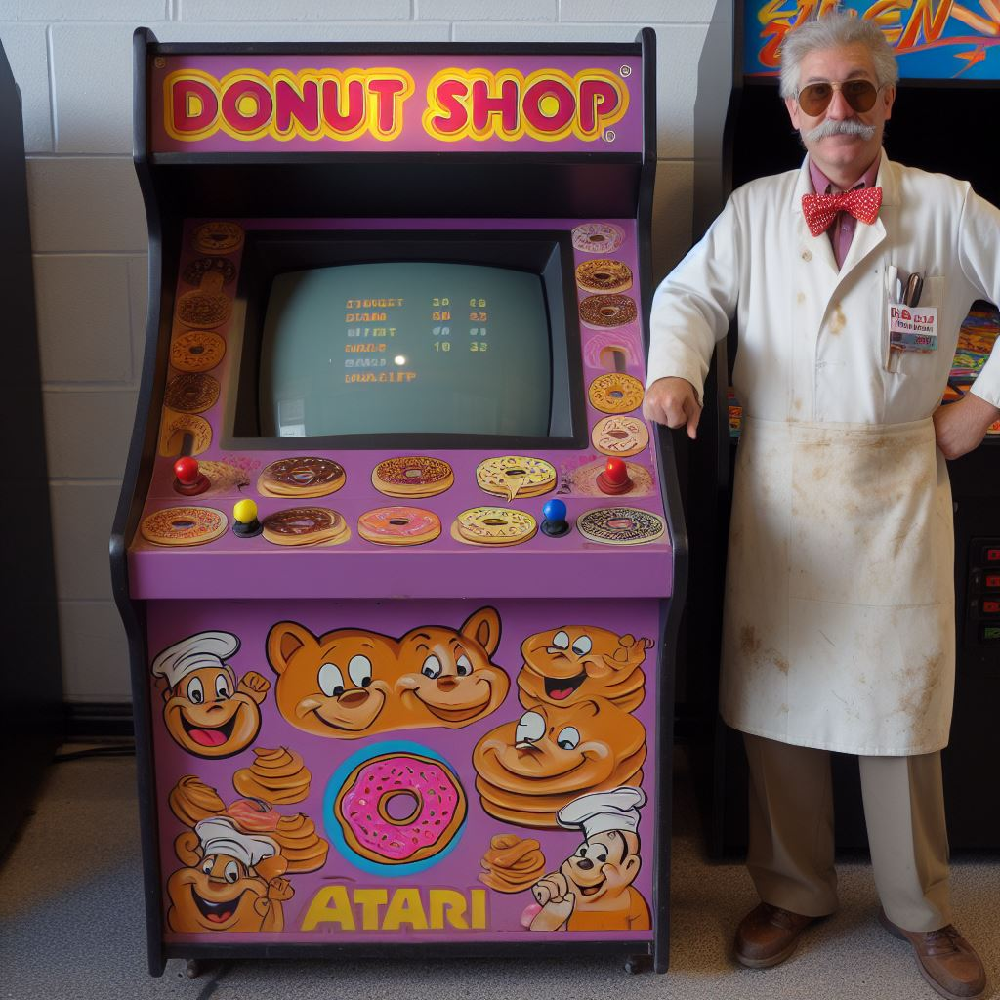

Fred the Baker Baking Company, a beloved institution in the baking industry, was founded in the year 1974 by a man named Fred. Fred was a passionate baker with a unique vision - to create baked goods that were not only delicious but also healthy. He believed that baking should be an art form, and he wanted to share his love for baking with the world.
Fred started his journey in a small kitchen in his hometown. He was a self-taught baker, learning the art of baking from his mother and grandmother. His first bakery was a small, humble shop in the heart of his hometown. He started with just a few baking recipes that he had learned from his family.
Over the years, Fred's bakery grew in popularity. His delicious, healthy baked goods attracted a lot of customers. His bread was known for its freshness and his cakes for their moistness and flavor. His bakery became a local landmark, and people from all over the town would come to enjoy his baked goods.
In 1980, Fred decided to expand his business. He opened a second bakery in a nearby town. This bakery was even more successful than the first one. His baked goods were so popular that he started getting orders from other towns and even from some restaurants.
By the 1990s, Fred the Baker Baking Company had become a well-known brand. His baked goods were sold in supermarkets and bakeries across the country. Fred was proud of his success, but he never forgot his roots. He always made sure to maintain the quality of his baked goods and to keep his bakeries clean and welcoming.
Today, Fred the Baker Baking Company is a successful and well-loved brand. Fred, now in his late 70s, still oversees the company and continues to bake his signature bread and cakes. His passion for baking and his commitment to quality have made Fred the Baker Baking Company a beloved institution in the baking industry.